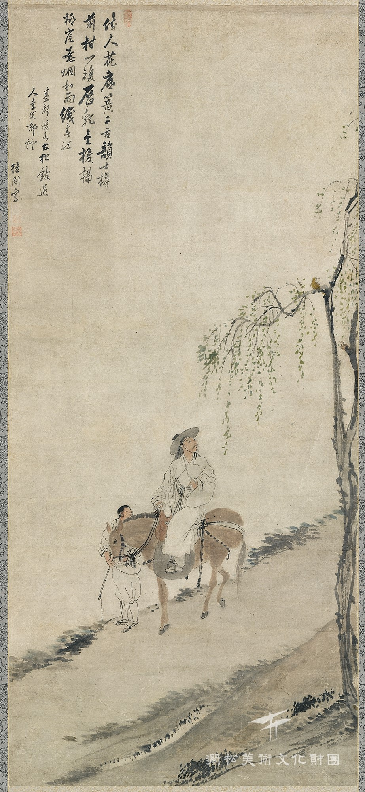
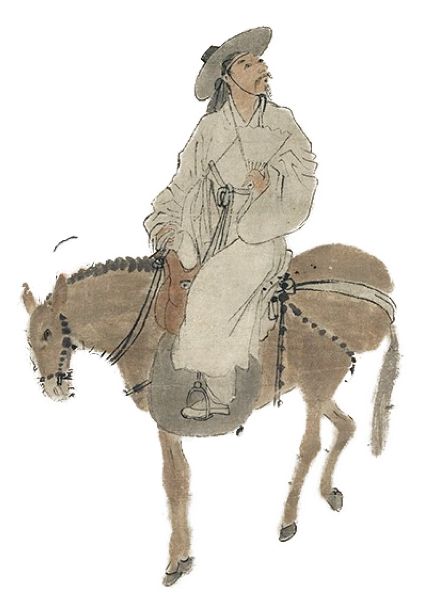
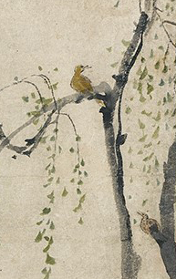
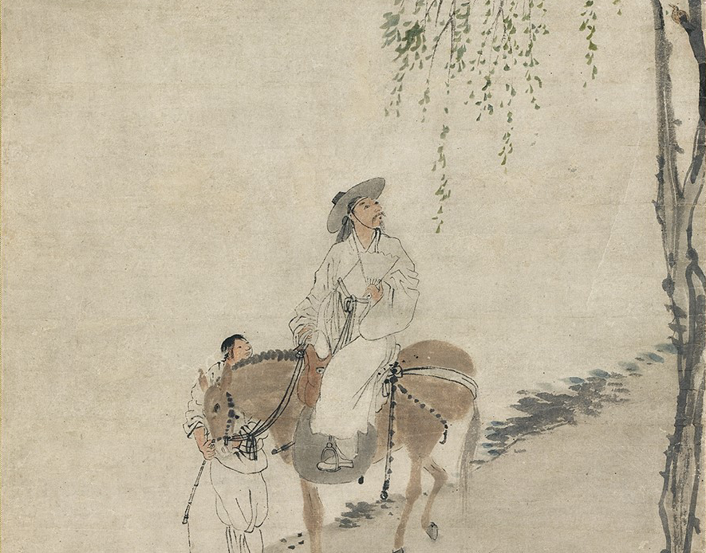

제 2장. 김홍도의 <마상청앵>
"아리따운 사람이 꽃 밑에서 천가지 소리로 생황을 부는 듯하고
시인의 술동이 앞에 황금귤 한 쌍이 놓인 듯하다.
어지러운 금북이 버드나무 언덕 누비니
아지랑이 비섞어 봄강을 짜낸다."

<마상청앵>, 117.2x52.0cm, 지본에 담채, 간송미술관 소장
김홍도의 <마상청앵>은 제목 그대로,
말 위에서 꾀꼬리 소리를 듣는 선비의 모습을 그려내고 있는데요.
과연 이 그림 속에는 어떤 이야기가 들어있을까요?

김홍도가 그려낸 많은 풍속화 중 인물을
초상화 기법으로 그린 작품은 흔치않은데요.
초상화법으로 그렸기에 실존인물인듯 한데...
아마 이 그림 속 선비는
김홍도가 자기 자신을 그려낸 것으로 추정됩니다.
그림을 자세히 보면,
선비가 부채를 손에 든 것을 보아
여름인 듯 하지만, 아직 버드나무 잎이
무성하지 않아 늦봄으로 보입니다.
이 그림 속 선비는 무엇을 보며 사색에
잠겨있는 걸까요?

버드나무 가지 위에는
여름을 알리는 전령사,
꾀꼬리 한 쌍이 아름다운 노래를
부르고 있습니다.
아름다운 꾀꼬리의 노래를 들으며,
선비는 가던 길을 멈추었나봅니다.

선비가 걷고 있는 저 길은 무슨 길이길래 길 뒤에 아무것도 그려지지 않을 걸까요?
아마도 강둑으로 보입니다.
이른 아침 물안개가 잔뜩 껴 강이 보이지 않는 장면을 담아낸 것 같네요.
물안개에 가려진 강둑의 풍경을 시원하게 여백으로 처리한 배경은
김홍도의 담백한 표현방식을 보여주는 부분이기도 합니다.
<마상청앵> 속 이야기가 흥미로우셨나요?
다음 이야기도 마음에 드실거에요!
이번엔 이름마저 새로운 설화화,
흥미로운 설화들을 그림으로 풀어낸 작품을 만나볼까요?